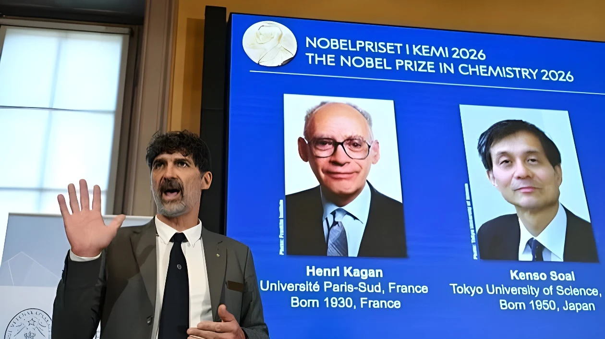

Le 7 octobre 2026, le prix Nobel de chimie a été attribué au Français Henri Kagan, 95 ans, et au Japonais Kenso Soai, « pour la découverte des effets non linéaires et de l'autocatalyse dans la synthèse organique asymétrique ». Leurs travaux portent sur les molécules chirales, qui existent en deux formes images l'une de l'autre dans un miroir : ils montrent comment obtenir une seule de ces formes, un enjeu central pour les médicaments, et éclairent la question de l'origine de l'asymétrie du vivant.
Le 7 octobre 2026, l'Académie royale des sciences de Suède a attribué le prix Nobel de chimie au Français Henri Kagan, 95 ans, professeur émérite à l'université Paris-Saclay, et au Japonais Kenso Soai, de la Tokyo University of Science, « pour la découverte des effets non linéaires et de l'autocatalyse dans la synthèse organique asymétrique ». Le sujet est la chiralité : beaucoup de molécules existent en deux formes, images l'une de l'autre dans un miroir, qui ne se superposent pas, comme une main gauche et une main droite.
Ces deux formes, appelées énantiomères, ont la même composition chimique mais peuvent se comporter très différemment dans l'organisme : l'une peut être active comme médicament, l'autre inefficace ou toxique. Or, au laboratoire, une synthèse classique produit les deux en quantités égales. Fabriquer une seule « main » est donc un enjeu majeur pour l'industrie pharmaceutique, mais aussi pour les arômes, les parfums et les matériaux.
Henri Kagan est l'un des pionniers de la catalyse asymétrique, qui utilise un catalyseur chiral pour favoriser une seule forme. Dès 1972, il avait publié un ligand, le DIOP, qui a servi de base à de nombreux catalyseurs. En 1986, il observe un phénomène inattendu : un catalyseur ne contenant qu'un faible excédent d'une forme miroir peut donner un produit bien plus asymétrique que prévu. Cette relation non linéaire entre la composition du catalyseur et celle du produit permet d'obtenir un excès d'une forme plus grand que ce que l'on croyait possible, avec de petites quantités de catalyseur.
| Lauréat | Contribution |
|---|---|
| Henri Kagan (France, né en 1930) | Effets non linéaires en catalyse asymétrique (1986) |
| Kenso Soai (Japon, né en 1950) | Réaction autocatalytique qui amplifie une asymétrie, la réaction de Soai |
Kenso Soai a conçu la première réaction chimique dans laquelle une seule des formes miroir possibles se forme. Il l'a montré avec l'alkylation d'un aldéhyde de pyrimidine par le diisopropylzinc, aujourd'hui appelée réaction de Soai. Elle est autocatalytique : le produit de la réaction sert lui-même de catalyseur pour fabriquer davantage de lui-même, ce qui amplifie un déséquilibre infime au départ jusqu'à ce qu'une seule forme domine. Chez Kagan, l'amplification vient du catalyseur ; chez Soai, du produit lui-même : dans les deux cas, un petit déséquilibre devient un grand déséquilibre.
Annonce du prix Nobel de chimie à Henri Kagan et à Kenso Soai.
Nobel de chimie pour Susumu Kitagawa, Richard Robson et Omar Yaghi, pour les structures métallo-organiques.
Nobel de chimie à Benjamin List et David MacMillan pour l'organocatalyse asymétrique.
Nobel de chimie pour la catalyse asymétrique, sans Kagan ; protestations de chercheurs français.
Kagan observe les premiers effets non linéaires.
Publication du ligand DIOP par l'équipe de Kagan.
La découverte touche à l'une des grandes énigmes de la science : l'homochiralité du vivant. Presque tous les acides aminés des êtres vivants sont « gauchers » et les sucres généralement « droitiers », alors que la chimie de laboratoire produit les deux formes à parts égales. Comment une seule a-t-elle pris le dessus ? Pour le comité Nobel, les travaux de Kagan et de Soai apportent une piste, avec des réactions où un très faible déséquilibre peut s'amplifier de lui-même.
Le membre du comité Peter Somfai estime que ces résultats pourraient aider à comprendre comment la vie est apparue. Soai se montre plus prudent : « Ce n'est pas la réponse finale », a-t-il dit. Ce que montre la réaction de Soai, c'est qu'une asymétrie peut naître et grandir sans intervention extérieure, ce qui ne prouve pas que ce soit ce qui s'est passé aux origines. Selon la presse, Soai faisait ses courses dans un supermarché de son quartier quand il a appris la nouvelle, et il a dit vivre l'un des jours les plus excitants de sa vie.
« Ce n'est pas la réponse finale. »
— Kenso Soai, à propos de l'origine de l'homochiralité, 7 octobre 2026 (traduction)Le prix couronne aussi une carrière longue de plus de soixante ans. Né en 1930 à Boulogne-Billancourt, Henri Kagan a étudié à la Sorbonne et à l'École nationale supérieure de chimie de Paris, puis soutenu sa thèse au Collège de France en 1960. Il a créé son groupe de recherche à Orsay à la fin des années 1960 et fait toute sa carrière dans l'actuelle université Paris-Saclay, dont il est professeur émérite. Membre de l'Académie des sciences, il a reçu notamment le prix Wolf de chimie en 2001 et la médaille Benjamin Franklin en 2005.
Il n'avait pas été associé au Nobel de chimie 2001, consacré à la catalyse asymétrique, ce qui avait suscité des protestations de scientifiques français. Vingt-cinq ans plus tard, le comité le distingue enfin, ce qui est salué comme un « cocorico » pour la France, qui compte désormais 74 prix Nobel depuis 1901, dont douze en chimie, parmi lesquels Marie Skłodowska-Curie (1911) et Irène Joliot-Curie (1935).
Selon le jury, les découvertes des deux lauréats sont d'une « importance capitale » pour les chimistes qui conçoivent des réactions utilisées dans la fabrication de produits pharmaceutiques. Elles servent aussi pour les arômes, les parfums et de nouveaux matériaux, avec des procédés plus propres et plus efficaces. La catalyse asymétrique avait déjà été récompensée par des Nobel en 2001 et en 2021, signe de sa place centrale en chimie moderne. Le prix de chimie a été décerné 118 fois à 202 lauréats depuis 1901, et le Nobel 2025 avait récompensé Susumu Kitagawa, Richard Robson et Omar Yaghi pour les structures métallo-organiques, ces matériaux qui captent l'eau de l'air du désert ou stockent des gaz.
Les effets non linéaires de Kagan et l'autocatalyse de Soai ont une origine commune : un phénomène que l'intuition jugeait impossible, un petit déséquilibre qui s'amplifie. Les récompenser ensemble revient à reconnaître que la chimie moderne a appris à utiliser l'asymétrie plutôt qu'à la subir. C'est aussi un rappel que la reconnaissance d'une découverte peut venir tard : quarante ans après les premiers effets non linéaires, le comité reconnaît un chercheur dont l'absence en 2001 avait été contestée par une partie de la communauté scientifique.